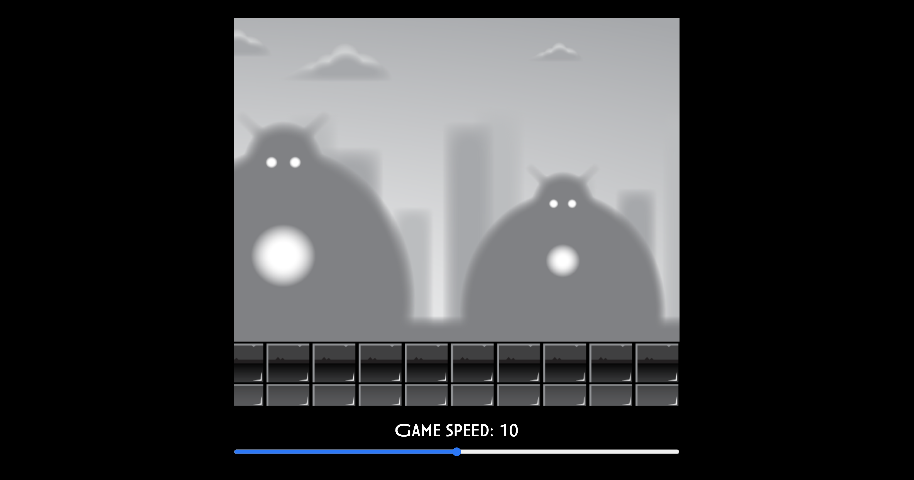

A personal experiment to discover the many possibilities the canvas element offers.
A few months ago, I became interested in the HTML canvas element, which allows you to draw graphics inside of a website. Using its built in methods, I experimented with elements from a 2d game tutorial made entirely with vanilla JavaScript.
Visit site
Shadow Dog
Feeding my curiosity
The canvas element is the perfect example of how spending a few hours (days actually..) on something can pay off. Now I know what's possible, and look forward to improving my skills.

The tutorial
This tutorial allowed me to know more about parallax backgrounds, looping over frames to create movements and creating both random and specific patterns.